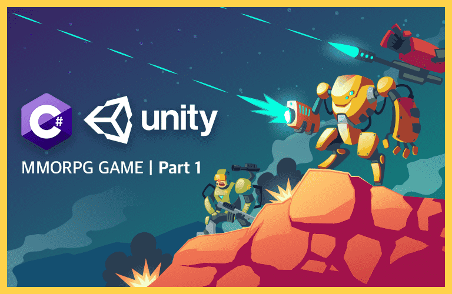

죽기 전에 하고 싶은 10가지
Buckit #1. 친구들과 함께하는 농구 대회
키가 그는 동안, 항상 내옆에는 농구공이 있었다. |
||
Buckit #2. 함께 공부하는 제자 만들기
함께 공부해서 모두에게 도움이 되도록 |
||
Buckit #3. 커피를 내릴 줄 아는 사람
포근한 날씨 카페 앞을 지나면 고소한 커피 볶는 냄새가 난다. |
||
Buckit #4. 세월을 낚는다.
낚시란 기다리는 것이다. |
 |
|
|  |
Buckit #5. 인디 게임 개발
사람의 마음을 움직이는 게임. |
|
Buckit #6. 지리산 겨울 산행
누군가 인생을 바쳤던 산 |
||
Buckit #7. 나만의 책 출판
호랑이는 죽어 가죽을 남기고, 사람은 죽어 이름을 남긴다” |
||
Buckit #8. 나의 여유 찾기
여유 : 느긋하고 차분하게 생각하거나 행동하는 마음의 상태
여유를 가질 때 일상 속 스트레스가 줄 게 된다. 이 것은 성숙한 사람이 가져야할 덕목이기도 하다. |
||
Buckit #1. 친구들과 함께하는 농구 대회
키가 그는 동안, 항상 내옆에는 농구공이 있었다. |
||
Buckit #2. 함께 공부하는 제자 만들기
함께 공부해서 모두에게 도움이 되도록
나는 나의 전공을 사랑한다. |
||